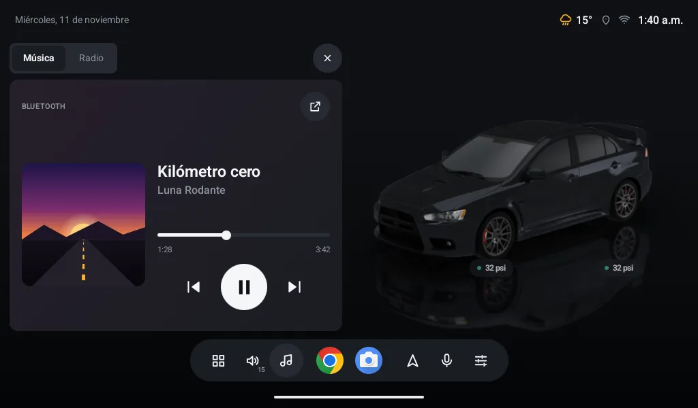
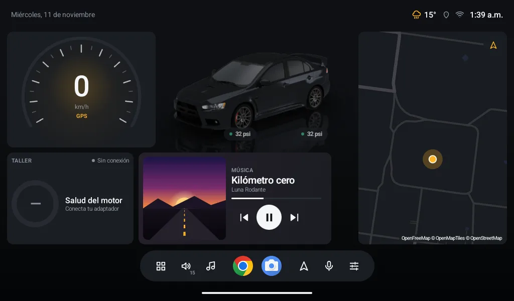

- LiteDash Connect
- Gratis
- Opcional
- Sin anuncios
Tu música del celular, en tu auto.
La app opcional para tu celular que pone en LiteDash lo que estás escuchando, con carátula y controles.
Android 7.0 o más nuevo · tu pantalla con LiteDash 1.4.130 o más nuevo

LiteDash no la necesita.
Todo LiteDash funciona igual sin ella: tu auto en 3D, el Taller, las llantas, el mapa, la radio y tu música por USB o Bluetooth. Connect solo suma lo que tu pantalla no puede hacer sola.
Lo que suena en tu celular, en tu inicio.
Muchas pantallas suenan por Bluetooth pero no dicen qué. Connect lo manda desde tu celular, sin importar la marca de tu pantalla.
- Canción, artista y carátula en el widget Música, con su avance.
- Controla desde la pantalla: play, pausa, siguiente, anterior y adelantar.
- Con la app que uses: Spotify, YouTube Music o la que tengas.
- El sonido no cambia: sigue saliendo por el Bluetooth de tu auto, como siempre.

Tu celular y tu pantalla, sin internet de por medio.
Se hablan por el hotspot de tu celular o por tu Wi‑Fi. Todo va cifrado y solo con la pantalla que vinculaste.
- No pasa por internet: tu música no llega a ningún servidor.
- Siempre a la mano: se conectan solos al encender la pantalla.
- Sabes cómo va: la app te dice si están conectados y por qué red.
- Pantalla
- Pantalla 11"
- LiteDash
- 1.4.130
- Red
- Hotspot de este celular
- Música
- En la pantalla
Tres pasos, una sola vez.
En tu pantalla
Abre LiteDash → Ajustes → Cuenta. Ahí aparece un código QR.
En tu celular
Abre Connect, crea tu cuenta gratis y toca “Vincular mi pantalla”.
Apunta al código
Revisa que el número de 4 dígitos sea el mismo en los dos. Listo.
Para que se encuentren, tu pantalla debe estar en el hotspot de tu celular o en el mismo Wi‑Fi.
Lo que ya tienes.
Un celular Android
Android 7.0 o más nuevo, con cámara para leer el código.
LiteDash en tu pantalla
La versión 1.4.130 o más nueva, y que tu pantalla tenga Wi‑Fi.
Una cuenta gratis
Con Google o con tu correo. Se crea en la app.
El hotspot o tu Wi‑Fi
Una red entre los dos. No hace falta tener datos ni internet.
Antes de instalarla.
¿Es obligatoria?
No. LiteDash funciona completo sin ella. Connect es para comodidad.
¿Cuánto cuesta?
Nada. Sin anuncios.
¿Por qué pide cuenta?
Para guardar tu LiteDash y recuperarlo si cambias de celular o de pantalla. Hoy solo guarda tu nombre, tu correo y qué pantalla vinculaste. LiteDash, en la pantalla, no pide cuenta.
¿Mi música pasa por internet?
No. Va directo de tu celular a tu pantalla, cifrada. No se guarda en ningún lado.
¿Por qué pide acceso a notificaciones?
Es el permiso con el que Android deja ver qué suena en otras apps. Solo leemos la canción, nunca tus mensajes.
¿Lleva el sonido?
No. El sonido sigue por el Bluetooth de tu auto. Connect lleva el título, la carátula y los botones.
¿Funciona con Android Auto?
Puedes tener las dos. Connect no toca tu Bluetooth ni desconecta Android Auto. Son para momentos distintos: mientras usas Android Auto, él ya muestra tu música; al volver a LiteDash, Connect se reconecta sola. Ojo: Android Auto inalámbrico y el hotspot usan el mismo Wi‑Fi del celular, y en muchos celulares no van juntos. Por cable no pasa.
¿Y iPhone?
Por ahora no. iPhone no deja que una app vea lo que suena en otras.
¿Gasta batería o datos?
Poca batería: solo trabaja mientras están conectados. La música no usa tus datos; va por la red entre los dos. Si tu pantalla usa internet por tu hotspot (mapa, clima), eso sí, como siempre.
¿Necesito internet?
Solo para crear tu cuenta. El enlace va por el hotspot o tu Wi‑Fi, sin internet.
¿Y si no se conectan?
Revisa que tu hotspot esté prendido y que la pantalla esté conectada a él. LiteDash vuelve a intentar sola cada minuto.
¿Qué es la notificación “Enlace con tu auto”?
Es lo que deja que el enlace siga con la app cerrada. Desaparece si desvinculas.
¿Puedo vincular varias pantallas?
Un celular por pantalla. Para cambiar, desvincula y escanea otra vez.
¿Es de código abierto, como LiteDash?
LiteDash sí. Connect es una app aparte y su código no es público; la forma en que se hablan sí está en el código abierto de LiteDash.
Pruébala hoy.
Instálala en tu celular, vincúlala con tu pantalla y escucha tu música con su carátula.
Gratis · Android 7.0 o más nuevo · tu pantalla con LiteDash 1.4.130 o más nuevo